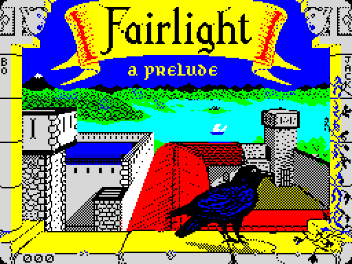
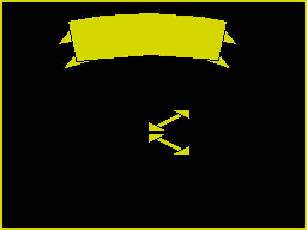
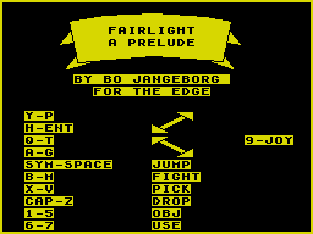
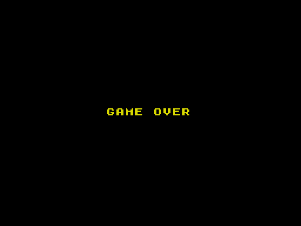
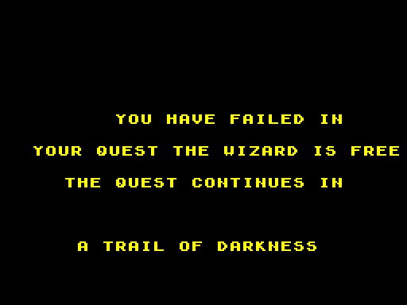
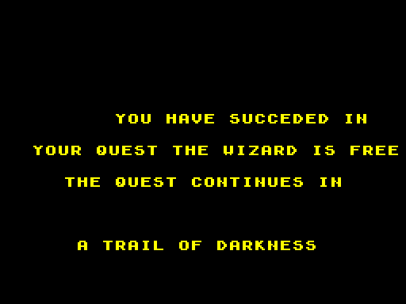

| The title page |
The game's first screen is the tape's own loading screen, which stays up while the loading tune plays (LOADING_TUNE) until a key is pressed. It was loaded with the game, a line at a time in the loader's own order, and is shown here from the snapshot the build makes of the tape:

The title page is a room. TITLE_SCREEN puts 79 in ROOM, draws it with the same interpreter as every other room (DRAW_CURRENT_ROOM) -- the banner is its lines and 1 fill (texture 3), in the colour of its record -- colours the screen (ATTRI), and prints the words with TITLE_PAGE_TEXT, one string for the printer with a move before each line; then "9-JOY" (this release's Kempston joystick, turned on and off with 9) and the wait for a key. Room 79 drawn and coloured on its own, by the game's routines in SkoolKit's simulator, and the title page as the game shows it, read from the screen where it waits for the key (WAIT):


The arrows beside the keys are the room's lines too. The keys are the keyboard's rows: Y to P, H to ENTER, Q to T and A to G walk, one row each way; SYMBOL SHIFT and SPACE jump, B to M fight, X to V pick up, CAPS SHIFT and Z drop, 1 to 5 choose a carried place and 6 and 7 use what is in it (CREATURE_UPDATE, MAIN_LOOP).
The two other screens between games are made the same way. When LIFE runs out, room 1 is drawn and GAME OVER printed over it (TITLE_SCREEN). The end of the quest is room 81, reached through a door (from room 31, with thing 8 as its key: read from the object table), where ROOMST prints the verdict: success if one of the five things carried is number 5 in the object table (the thing that lies in room 33), failure otherwise; then MESS2's two lines about the quest going on. Read from the screen of the game run in the simulator: LIFE set to nought in the first room; the knight sent into room 81 with nothing; and sent there with the thing from room 33 (the build's own sessions):


